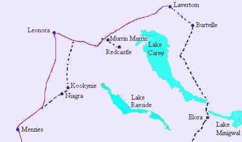
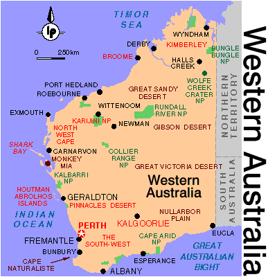

BY HARRY MASON NEXUS Magazine My research into this subject began about two
years ago in early 1995. A geologist colleague and
friend, John Watts of geo-science consultants
Mackay & Schnellman and Associates, asked for
my opinion of earthquake risk in an isolated area
of the Eastern Goldfields of Western Australia.
John knew of my long experience in the region,
conducting geological and geophysical field
exploration surveys there for gold mineralization -
hence the approach to myself for scientific
advice.
Whilst visiting a small underground gold mine
John Watts had noticed a "Kalgoorlie Miner"
newspaper article dated 1-06-93 attached to the
barracks kitchen fridge door. This reported that on
28-05-93 at 23.03 hrs. a meteor fireball was seen
by several observers flying from south to north
between Leonora and Laverton. This was immediately
followed by a significant 3.9 Richter scale
earthquake - picked up by 23 seismic receivers
around Western Australia and the Northern
Territory. Ed Paul - a geophysicist at the A.G.S.O.
Mundaring Seismic Observatory near Perth - had
received several telephone calls from the public,
has had the Laverton Police. Ed had reasoned that
there was a possible connection between the meteor
fireball and the quake due to an impact with the
ground.  The small gold mine (the Alycia Mine) had experienced this quake event as underground 3 inch steel pipes sheared clean in half and collapsed underground drives and shafts. My friend John has done a considerable amount of earthquake risk assessment during his consulting career and thought that this damage pattern was more like instantaneous blast damage - as is normally caused by nuclear explosions - rather than standard earthquake damage. The key to this was the underground damage and its style when compared to the more normal quake mine damage - usually limited to surface building collapse caused by quake induced seismic ground waves. Many observers reported that the fireball passed over making a pulsed roaring noise, similar to a very loud road train diesel engine, and that after the seismic wave hit they heard a huge long drawn out explosion - similar to a very major, but long drawn out, mine blast - but somehow peculiarly different. At the time we reasoned that Ed Paul was probably correct and that a meteor fireball (a bolide) could have impacted explosively into the ground and caused the apparent "earthquake" by impact, or by airburst explosion shock wave induction. This area has no record of quakes since West Australian seismograph's were first installed in 1900, nor Aboriginal racial memory of same. As such an impact is a major geological curiosity, often observed in the Recent geological record, but rarely recorded as occurring in human history, we decided to embark upon a private research project to document the event - leading, we hoped, to scientific fame and glory. We did not then appreciate just where this research work and interest would lead to ....... I visited the area in May and June 1995 and began to interview, by personal visit or telephone, the inhabitants of a three hundred kilometer radius area - centered upon Laverton. This Eastern Goldfields region of W.A. is a semi-desert and very isolated with an extremely low population density.
It contains several very large sheep stations ("ranches"), a couple of small gold mining towns (Leonora and Laverton), plus several isolated gold mine sites, a few gravel or dirt roads, a lot of thick mulga bush and gum tree scrub vegetation, with some sand dune fields and spinifex "grass" cover. Each sheep station covers an area the size of the London "Home Counties" combined, and the area of the investigation is roughly equivalent to that of England. I hired a light plane to visit outlying stations and Aboriginal settlements searching for eyewitnesses, and then to search for "ground zero" - this took some three weeks. A summary of all currently available witness data follows :- A large orange red spherical "fireball" with a very small bluish white conical tail had flown from low down in the south over observers travelling to the north. Some observers reported that the fireball was cylindrical in form and more yellow-blue-white in color. It was heard as a pulsed roaring or loud diesel engine sound - well BEFORE it arrived, it dropped off no glowing fragments, and had no long luminous tail or sparks - as is common meteor activity. Its speed was similar to a 747 jet liner or a fast jet plane and obviously less than the speed of sound since loud noises were heard before the "object" arrived. The sounds heard before it arrived were most definitely NOT "normal" electrophonic sounds as have been quite commonly reported from historical meteor fireball events - (Such electrophonic sounds are experienced as weird "pings" and "whees" of low volume intensity and are not fully understood at this time, but are believed to be due to hertzian E/M waves produced in the bolide plasma trail and propagated at the speed of light to the observer - in advance of the bolide. These E/M waves are thought to harmonically couple with the inner ear, or to cause nearby objects to vibrate sympathetically thus producing the observed low volume sounds). No sonic booms were reported, and no observer believed that any explosion was heard until the "object" got to ground level - or very nearly so (behind low hills or tree line cover) - and exploded/or impacted. It flew apparently parallel to the Earth's curvature in a long "nap of the Earth" arcing trajectory at low altitude (some 1-2000 meters ?) from low down on the southern horizon, not with a "normal" meteor inbound high angle high altitude trajectory. The fireball lit up some observers and their vicinity as it passed overhead. It's flight trajectory was observed over a distance of least 250 km. (although it probably had a much longer flight path from well out over the Antarctic Ocean). It then appeared to arc down towards the ground and disappeared out of sight behind trees or low hills. This was followed by a near blinding massive high energy burst of blue-white light that rippled for about 3-5 seconds. This lit up the night (windless, cloudless, and moonless) sky as if daylight. Observers could see for + 100 km. in every direction at ground level - "AS CLEAR AS DAY". The energy intensity involved in this light flash was similar to the light flash generated by a significant nuclear blast, and in many respects the incident strongly resembled a night time nuclear test. A huge red colored flare then shot vertically skywards for some considerable distance (several kilometers ?), and this was immediately followed by a massive seismic ground wave that hit the observers nearest to "ground zero" such that rocks and beer cans vibrated off of tables and the ground shook violently so that persons tending a camp fire fell over. A very loud major explosive blast then followed that was heard over a 250 km x 150 km corridor, minor quake damage was reported as far as 150 km southeast of the "ground zero" - the other directions (excepting Leonora to the southwest) being largely uninhabited. One engineer situated that night in Laverton, with Gulf war experience of missiles and aircraft breaking the sound barrier, described it as "definitely a major explosive concussion wave blast (not a sonic boom) - similar to, but MUCH bigger than, a normal open pit mine blast". A large deep red-orange colored hemisphere of opaque light with a silver outer shell lining then rose from ground level to hover around over the "ground zero location". This structure when fully developed was approximately three times the size of a typical Goldfields setting Moon as seen by observers located 30-50km from it - (i.e. it was very big), and it "bobbed around a bit for NEARLY TWO HOURS, before disappearing suddenly - as if someone threw the light switch off". This "half soup plate structure " (looking like a "deep red very large and half set Sun") was seen by two observers from widely separated locations, one at the Banjawarn station buildings, and one at the Deleta station buildings. Dogs at both locations went totally berserk whining and howling and attempting to get off their leads - whilst the aerial light hemisphere was up; presumably there was an ultra-sonic or vlf E/M wave propagation that the dogs were extremely sensitive to. Aboriginal prospectors who were camped very near to ground zero at the Freeman's Find gold prospect were extremely spooked by the event believing that it was "the end of the world"...... Some of them thought that they had witnessed a "jumbo jet" crash behind a range of low hills. They gathered their swags (bed rolls) close together - as they were too scared to sleep apart. In the morning they climbed a hill to look for fires in the distance but could see no smoke. They quickly departed the area for the safety of Leonora. One Aboriginal stockman observer located at the Banjawarn station buildings believed that he was witnessing a fairly slow moving "UFO" and became very worried that they were going to land and abduct him and his two companions - since it flew directly at him and then passed very noisily low overhead - going into it's final downwards arcing plunge ..... Almost exactly one hour after the first big event three observers (located at the Banjawarn station buildings) also saw a second much smaller fireball - more blue-green-white in color, which appeared to rise from ground level ?, but which definitely rose from behind distant trees well south of the station perimeter, and flew to the north in a high mortar shell type arc before coming down to ground level, behind distant bush. It's flight path was divergent to the north northeast when compared to that of the first major "fireball" event of that night. This later event then created a second but very small explosion and concomitant minor ground shake - similar to the first event, but much smaller in size, and with no resultant rising hemisphere of opaque light. Another observer also reported seeing parts of this second event - a prospector located north of the Mulga Queen Aboriginal settlement. This second event does not appear to have been of a magnitude sufficient to register on A.G.S.O. seismographs. Analysis of the best A.G.S.O. seismic records by U.S.G.S. energy conversion equations suggest that the energy involved in the first main event quake was probably of the order of 1 - 2 kilo-tonnes of TNT equivalent. The blast itself was probably bigger as not all such explosive energy is transmitted efficiently into the ground and along the Earth wave path to the seismograph observatories. The main fireball eyewitness "explosion ground zero" was located near to the northern edge of Banjawarn station, whereas the calculated A.G.S.O. quake epicenter fix was close to the southern perimeter of Banjawarn station, the difference apparently reflecting the difficulties involved in calculating accurate quake epicenters from remote seismograph locations. In spite of the finally excellent eye-witness "ground zero impact" cross fixes, a considerable time in the air in a Cessna 172 failed to find any crater or ground anomaly of any kind there or anywhere else in a 300km diameter search area. Ground and air examination of the nearby Celia fault-lineament could find no evidence of any movement on this structure. Banjawarn is arguably the most isolated station area in the Eastern Goldfields region of W.A. This sheep station, had achieved notoriety since it was purchased the same year (1993) by the Japanese AUM "Supreme Truth" sect - of 1995 Tokyo Subway gas attack fame. Research soon showed that a Japanese AUM "Supreme Truth" Sect representative (Deputy Leader Hayakawa) had been inspecting "for sale" sheep stations around and including Banjawarn in early April 1993. Hayakawa had initiated purchase procedure for Banjawarn in late April 1993 desiring to "conduct experiments there for the benefit of mankind". The station actually changed hands when papers were signed and a bankers cheque was provided on the 1st of June - only three days after the fireball event. However the agreement re sale to the AUM was completed on the 23rd. of April 93 - some 35 days prior to the fireball event. As the 28-05-93 event did not appear to fit any normal meteor impact scenario we began to joke that the AUM sect had probably sent a cruise missile with a pulse jet engine and detonated a nuclear weapon on the uninhabited desert fringe immediately north of Banjawarn station....... Meteors usually travel at very hyper-velocities >25,000 m.p.h. and do not fly "nap of the earth" low level (1000 meters altitude) trajectories, plus they usually have long luminous tails, and drop off fragments, and are not documented as triggering earthquakes. Pressure changes due to storms (or possibly pressure waves created by a meteor flypast ???) are known to trigger quakes in stressed plate regions of the crust, but this region can hardly be assigned a high stress fault signature - given the total lack of such quake events in it's known human history - it is a very stable Archaean Age cratonic shield area - with the nearest location demonstrating quake activity being located in the Fraser Range - some 5/600km to the south, and east of Norseman. Then three truckies reported (in response to ABC radio interviews by the author) seeing yet another fireball soon after starting work at 5.00am (exact date unknown) in May or June of 1993. Their "moon sized" fireball flew from south to north at low level (some 1000 meters) with a high speed jet plane velocity. It was yellow-orange-red in color and had a very small blue-white tail, and lit up the early morning dark sky in an intense blue white light flash that silhouetted the countryside, as it too headed immediately west of Laverton directly for Banjawarn station. As they were sitting next to loud diesel engines of their own we do not know if this third Banjawarn fireball made any pulsed roaring noise. This third fireball held a course that, would not only pass over Banjawarn but, could ultimately reach the Exmouth peninsular in the far north west of W.A. Now for three fireballs to be heading towards Banjawarn is just too much of a co-incidence for a meteor type event. Meteors of this size are very rare events let alone three heading at different times into one small space on the Earth's surface at Banjawarn. If we assume that fireball #3 was seen at 5.00am on the 29th of May 1993 and thus followed fireball #1 by six hours as in say a south to north travelling chain of bolides (rather like the recent Shoemacher-Levy -9 impacts on Jupiter) we have the problem that in six hours the Earth has rotated about it's north-south axis 90 degrees and fireball #3 should have come in over East Africa ! Subsequent to the initial publication and radio broadcasts of my research on the Banjawarn Event I was contacted by a Laverton "Dogger" (Dingo trapper) who reported seeing a yet forth fireball flying from Laverton to Banjawarn in late 1989. His orange fireball also flew at jet plane speed and at relatively low level altitude following around the Earth's curvature like an F-111 flying under radar with a loud diesel engine noise and gave off a vivid blue-white flash as it disappeared over the northern horizon. Other Goldfields observers reported seeing huge glowing orange-red hemispheres or "shells" formed up on their respective horizons during the mid to late 1980's. Event reconstructions from several witnesses places these hemispheres in an area roughly north-west of Banjawarn Station. All of these sightings mitigate strongly against meteors or bolides being the causative element in these events. OTHER FIREBALL EVENTS There have been many other post May 1993 Australian reports (in excess of 1000 - often multiple events) concerning aerial fireballs and associated light energy emission. These involve exotic diesel freight train noise making spherical fireballs, and some noiseless variants, flying long trajectories over different parts of Australia. These fireballs have been observed in all our states (as recently as the 4th. of February 1997), and in many cases have exhibited variations on and combinations of the following actions: very low altitude "nap of earth" trajectories, small to non-existent tails, no fragment drop off, apparent velocity less than that of sound, no associated sonic booms, considerable sudden change in course, speed up, stop dead, reverse course, fly vertically upwards into space, create intense vibration of ground and housing as they pass over, or explode over the horizon in massive blue-white arcing light displays with major explosive sound events - or silent intense high altitude light flashes, create power generation over-voltage outages and other electrical potential effects. The Banjawarn case demonstrates a cause-effect relationship with a 3.9 Richter earthquake and other fireballs have possibly been related on at least two occasions to 3.0-4.0 Richter scale earthquakes in eastern Australia. [NB. We now know of some 10 fireball-earthquake-explosion events in Australia since 1993]. If meteors are the source of these observations then lately we appear to be continually encountering a very odd species of meteor that exhibits a previously undocumented very exotic behavior and a very high statistical rate of arrival in Australia - apparently (until recently -1996) largely ignoring the rest of the world. Other possible causes such as natural gas
fireballs, min-min lights, and earthquake stress
lights may be easily discounted by many aspects of
these fireball events - but not least because of
their usually very low energy output when compared
to the very large energies involved in these recent
Banjawarn type fireball incidents.
Probably the most spectacular of these fireball events was that of approximately 2.00am on the 1st. of May 1995 above Perth W.A. At that time a large spherical orange-red fireball with a small conical blue-white tail was observed flying from the Indian Ocean over Bunbury in south western WA in a north northeasterly direction at a relatively high altitude, apparently flying a trajectory that was parallel to the earth's curvature. The altitude of this fireball is open to question as many observers thought that it was not too high in the sky but newspaper reports later placed it at several kilometers altitude. The fireball soon arrived above the eastern side
of the City of Perth (population = + 1 million),
and was seen and heard by many eye-witnesses over
it's 150 km. land flight trajectory.
Observers reported that the "object" emitted a
loud roaring pulsed noise - similar to a diesel
freight train - before it arrived - and that it
flew at a steady speed similar to a high speed jet
aircraft. There was no report of a sonic boom.  Whilst opposite the eastern side of Perth near Midland the fireball reportedly stopped dead in the sky and the tail inverted through the fireball to point towards the previous direction of travel. There was then an enormous burst of blue-white arcing light energy that lit up the city and it's suburbs for many kilometers - briefly as clear as daylight - similar in many ways to that of a nuclear blast. A loud vibrating massive explosion cum seismic wave reverberated around Perth and the city buildings shook whilst books and objects fell off of shelves. Several observers reported that at the instant of the explosion four white lights raced apart from the main "object's" center forming a right angle white cross in the sky. No object was actually seen at any time - just a bright orange-red fireball of light emission and it's very small blue-white light conical tail. One observer reportedly told the Perth
Astronomical Observatory of seeing sparks drop off
of the fireball during it's flight and that it had
along tail or streak of orange color. About half of the city's population i.e. some 500,000 people were woken up by the violence of this explosive and seismic wave event. The ground vibration wave was picked up by the A.G.S.O. Mundaring Seismic observatory as a paper analog recording lasting some two minutes timed at 17.57utc i.e. commencing at 1.57am W.A. time. This event raised some discussion in the W.A. press over the next few weeks and was generally explained in the media by the Perth Astronomical Observatory as the explosion of a meteor fireball with a power of ONE or MORE megatons of TNT equivalent, at an altitude of several (20 km. ?) kilometers. Surprisingly this event was not apparently widely reported in the World press. One would think that something like the equivalent of a large Hydrogen Bomb detonating above a city like Perth would be worthy of great discussion. Obviously it was definitely not loud enough to wake Canberra............ Reports soon came in of small lights and strange aerial noises that had moved to the north northeast of Perth towards the small town of Toodyay and beyond, on the night in question. Amateur meteor astronomers spent a considerable amount of time interviewing farmers out that way but no meteor fragments have been recovered to date (December 1996). Later reports noted that on the same night, some 1900 kms. to the north north east of Perth, a couple situated on Sunday Island, north of Broome, in the Kimberley region of WA, were woken some time around 3.00 am by a loud roaring pulsed diesel engine noise - similar to a D9 bulldozer or tank engine - advancing directly towards their front door. This noise rose to a crescendo and books and objects fell from their shelves. The seismic ground vibration wave and sound event lasted for some 1-2 minutes. Believing they had experienced an earthquake the family listened to the early morning ABC radio, but the only story was of the explosive meteor fireball event above Perth. A check of the Mundaring seismic records has shown that no earthquakes of any magnitude at all occurred at Sunday Island or anywhere else in their region that night. One possible interpretation of these events is that a meteor fireball exploded on contact with the Earth's denser atmosphere high above the east of Perth and that small fragments including a very large fragment flew north north east over Toodyay to eventually be heard flying low over Sunday Island in the Kimberley region. This meteor interpretation ignores the slow speed of the fireball i.e. similar to a jet plane and, due to it's roaring sound being heard before it arrived, apparently less than the speed of sound at some 750 mph (whilst most meteors are generally hypervelocity objects flying at many thousands of miles an hour - often > 25,000 mph.). The meteor hypothesis also ignores the strange aerodynamics of an "object" that reportedly stopped dead in the sky whilst it's very small luminous tail inverted through the spherical fireball, and ignores the lack of recovered fragments from so great an explosive event. It also ignores the accumulated evidence from many other similar fireball events that have occurred throughout Australia in recent years. The observations of it's flight, or effects associated with the event, cover some 2,000 kilometers in strike across W.A. and thus allow a reasonably reliable attempt at reconstruction on a globe of the planetary perspective. The trajectory starts somewhere to the south southwest of Perth - possibly in the Indian Ocean or in Antarctica, and projects north northeast towards the north eastern coast of Japan and across the center of the Siberian Kamchatka peninsular. If continued the trajectory would cross over northern Alaska over Arctic Canada to emerge into the Atlantic somewhere near Nova Scotia. It is interesting that the projected trajectory skims Antarctica along it's coast near Enderby Land. At this location is a complex of three research bases. The Japanese bases of Showa (approx. 40 degrees East) and Mizuho (approx. 45 degrees East and inland), and the former USSR base of Molodezhnaya (approx. 45 degrees East on the coast). Further northwest the former USSR base of Novolazarevskaya (approx. 15 degrees East on the coast) also lies approximately upon the projected trajectory. The former USSR also has bases ringing the coast of Antarctica at the following approximate locations 15 deg E, 45 deg E, and 92 deg E (Queen Mary Land), 105 deg. E (Vostock inland near the South Magnetic Pole),163 deg E (Oates Land), and 224 deg E (44 deg W) (opposite the Rockerfeller Plateau). These bases effectively give a good arc coverage of the entire globe from the radio transmission viewpoint. The Kamchatka Peninsular in Siberia was the site of the infamous KAL 007 incident. Recent research by David Pearson published in his book "KAL 007: the COVER - UP") concerning this 747 jumbo jet shoot down by the Soviets suggests that KAL 007 was attempting to gain intelligence on a very large transmitter site located in the central part of the peninsular. It has been suggested by Japanese journalists (Archipelago Magazine www.pelago.com)) and an American scientific researcher (Tom Bearden) that this Kamchatka transmitter is one of a worldwide series of former Soviet electro-magnetic weapons transmitter complexes. Such weapons are believed to be variants on designs proposed by Nicola Tesla in 1908 and to have the ability to transmit explosive, and other effects such as earthquake induction, across inter-continental distances to any selected target site on the globe, with force levels equivalent to major nuclear explosions. Evidence for the existence of such exotic weapons is given in part by a recent 23rd December 1996 "Voice of Russia" radio broadcast on their Science and Engineering programme where they discussed modern Russian E/M weapons of the micro-wave plasma variety. The following is a part transcript of that programme featuring the interviewer Yekimenko and the science authority Belitzky. YEKIMENKO: How would a microwave generator be used "in anger" Boris? BELITZKY: It would be used to fire a plasmoid, that is, a blob of plasma into the path of an incoming missile, its warhead, or an aircraft. The plasmoid would effectively, ionize that, region of space and, in this way, disturb the aerodynamics of the flight of the missile, warhead, or aircraft, and terminate their flight. This makes such a generator and its plasmoid a practically invulnerable weapon, providing protection against; attack via space or the atmosphere. YEKIMENKO: Boris, I hate to ask this question, but still...The generals and scientists who speak of this weapon - they couldn't be bluffing, could they? BELITZKY: 0h no. This is evident if only from the fact that a few years ago in 1993, at the Russian-American summit in Vancouver, the Russians proposed a joint experiment in testing such generators - or plasma weapons, as they are called here - as an alternative to the Strategic Defense Initiative, SDI. In such an experiment, which it was proposed to code-name :'Trust," the system would be used to repulse a missile attack. In this way Russia hoped to strengthen the new climate of post-cold-war security in the world. These comments of course emphasize that many observed "lights = objects" in the night sky may in fact have no mass associated with them at all, and are actually "holograms" of light being given off by "slugs" of dense E/M energy (moving, or static as a standing wave node). These light shapes being held in place by three or more transmitter's providing their "Tesla wave" output to manipulate "plasmoid blobs" in 3D space. HARRY MASON B.Sc., M.Sc., M.A.I.M.M., M.I.M.M., F.G.S. (Geologist-Geophysicist) |